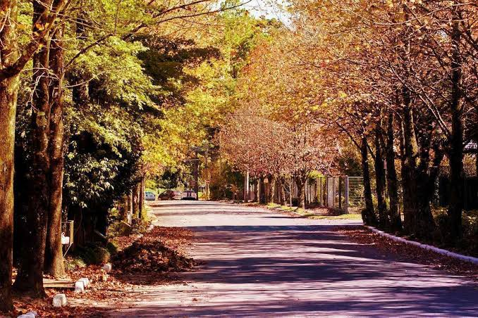

Inverno
Estação de temperaturas mais baixas. Campos do Jordão é conhecida pelo clima frio de montanha.
Estação de temperaturas mais baixas. Campos do Jordão é conhecida pelo clima frio de montanha.

Período de florescimento e temperaturas amenas; a imagem mostra árvores floridas em Santa Bárbara d'Oeste.

Estação de transição entre o verão e o inverno, com temperaturas gradualmente mais amenas.
Estação geralmente mais quente, com dias longos e possibilidade de chuvas.